Nous plantons
des écosystèmes forestiers
denses, durables et pleins de vie.
Une méthode simple, efficace & respectueuse.
Contactez-nousUne méthode simple, efficace & respectueuse.
Contactez-nous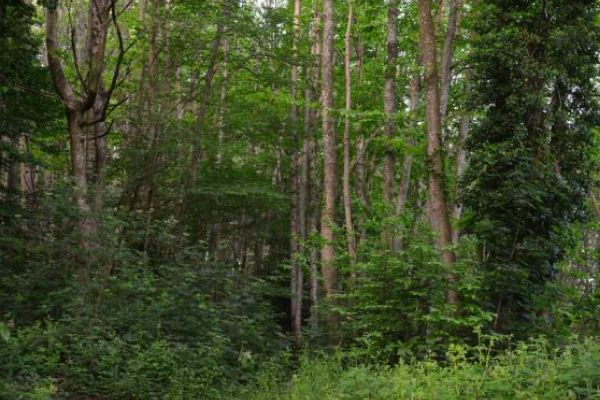
Planter une forêt est un projet à long terme. Néanmoins, les méthodes que nous mettons en œuvre permettent de gagner du temps pour pouvoir bénéficier rapidement d'une forêt.
Nos services vous permettent de revaloriser des parcelles appauvries, polluées ou mortes en termes de biodiversité.
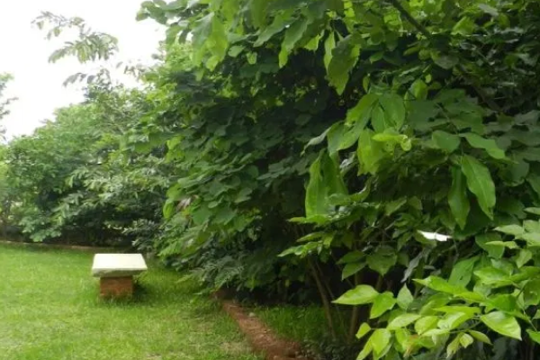
Régulateur naturel climatique en témpérature et en humidité, ombre en été, filtre à poussières, brise-vue pour les voisins, absorbeur de bruits, production de bois de chauffage, abri pour les animaux.
Une micro-forêt (entre 100 m2 et 1 ha) vous apporte bien plus d'avantages qu'un gazon pour beaucoup moins d'entretien.
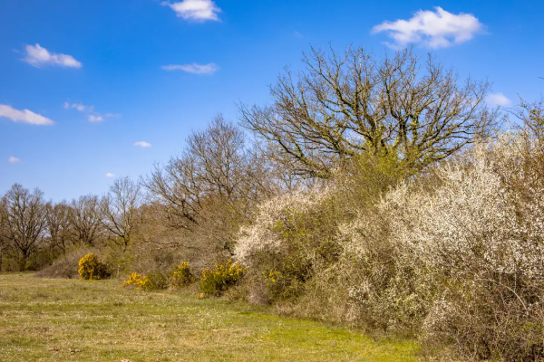
Brise-vent, ombre pour les bêtes, abri et passage pour la biodiversité, clôture naturelle, frein de l'érosion, rupture de pente, production de bois, fixation ou dégradation des polluants... ou tout simplement une amélioration du cadre de vie.
Les avantages d'une haie sont très nombreux.
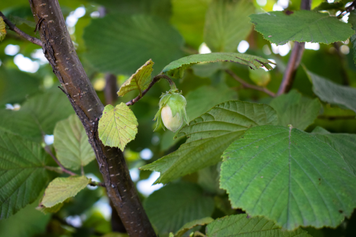
Loin de la vision actuelle du verger, une forêt comestible (ou jardin-forêt) permet à différentes variétés de différentes hauteurs de vous apporter une abondance alimentaire (feuilles, fleurs, fruits, tubercules, champignons).
Sans forcément parler d'autonomie alimentaire, une forêt comestible est de loin le meilleur compromis entre surface, investissement et bénéfices.
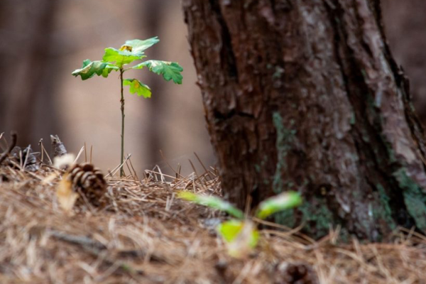
Vous êtes propriétaire d'une parcelle de forêt mais vous souhaitez anticiper le dérèglement climatique en re-densifiant ou bien en diversifiant les essences ? Les deux ? C'est une bonne idée.
Que vous soyez déjà allé voir votre parcelle ou avez qu'une vague idée de ce qui y est planté, nous vous proposons nos services de conseil et de plantation.
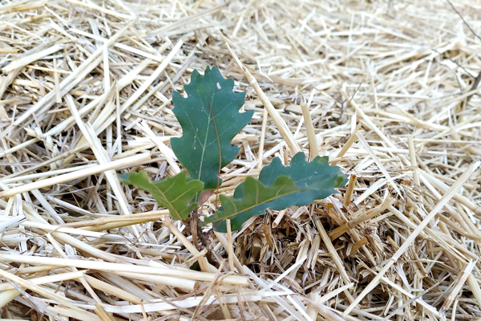
Vous avez envie de planter vous-même une micro-forêt ? Que vous soyez déjà bien renseigné ou non, vous êtes convaincu que 100 m2 de micro-forêt vous seront plus utiles que 100 m2 de gazon ou de terrasse.
Nous vous facilitons le travail avec le kit de micro-forêt à planter à une personne en un weekend : 250 plants, outils, intrants, vidéos tuto et protections.
Ce n'est qu'un ensemble de principes, pas une recette miracle universelle. Chaque projet est différent, chaque contexte est unique.
Nous choisissons principalement des variétés endémiques ou a minima, compatibles entre elles et avec le terrain, le climat ou les risques à proximité.
Nous varions les essences dans le but de ne pas créer de forêts spéculatives.
Si possible, nous essayons de réintroduire des espèces anciennes ou en voie de disparition dans le but de conservation et de préservation de la biodiversité.
Nous veillons à un minima de 6 essences d'arbres et arbustes par parcelle. Nous essayons de maximiser la diversité en accord avec votre budget.
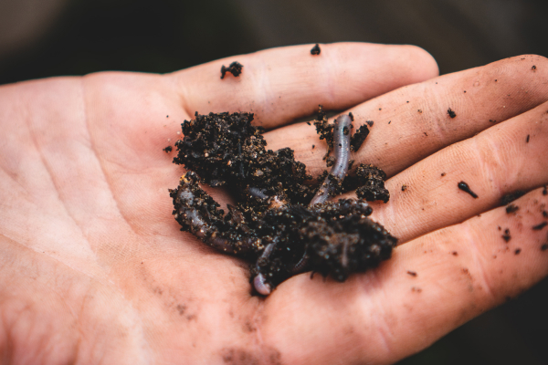
Que le sol sur lequel nous allons planter soit un sol pauvre, préalablement pollué ou encore mort en terme de biodiversité, nous allons passer par différentes étapes en fonction des besoins. Du sous-solage (si nécessaire) jusqu'à l'apport de matières organiques ou de micro-organismes.
Selon la disposition et les dimensions de la parcelle, nous essayons de prévoir un accès/passage pour l'entretien et pouvoir profiter de la forêt.
Nous prévoyons toujours une zone témoin (au cœur) pour vous permettre de comparer l'évolution naturelle sans intervention.
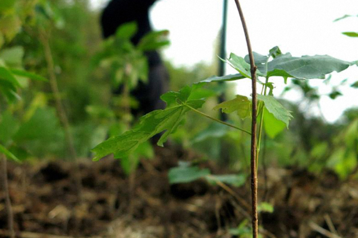
Nous plantons une densité élevée de plants par mètre carré afin de créer une compétition et une symbiose. La proximité des plants les fait grandir verticalement plutôt qu'horizontalement.
Nous mélangeons les hauteurs adultes afin de créer une forêt étagée. Nous adaptons l'emplacement des essences en fonction du relief, des vents et de l'exposition.
Afin de récréer une forêt naturelle et de prévenir l'effet domino en cas de tempête, nous n'alignons pas les plants.
Nous privilégions les tiges inférieures à 50 cm pour une bonne reprise.
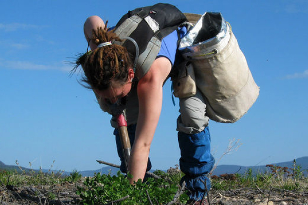
Nous favorisons la plantation de chaque arbre à la main. Nous utilisons des machines si la préparation du sol l'impose.
Nos plants sont produits par des pépiniéristes professionnels afin de pouvoir compter sur des volumes importants rapidement.
Zéro plastique utilisé pour le tuteurage ou la protection. Uniquement des matériaux comme le bois, le métal et la jute.
Là où certains de nos concurrents passent moins de 3 secondes par plant, nous prenons le temps nécessaire pour que chaque plant dispose d'un trou à la hauteur profondeur de son potentiel, de ses besoins et de son entourage.
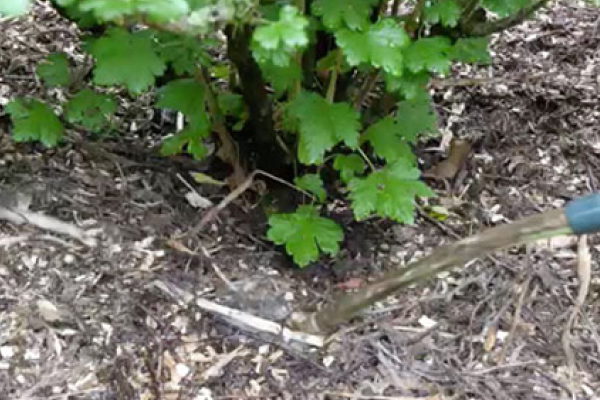
Une des garanties fondamentales d'un bon départ de forêt est l'eau, régulière et suffisante pour assurer la vie. Qu'il s'agisse de la vie du sol, des plants ou des animaux qui la fréquentent.
Nous essayons cependant d'intervenir le moins possible au niveau de l'arrosage. Nous le pratiquons uniquement dans les conditions extrêmes.
Nous veillons également à ce que l'eau trouve le meilleur chemin au sein de votre forêt afin de limiter l'érosion et ses effets ou encore qu'elle puisse y être stockée, de manière permanente ou saisonnière.
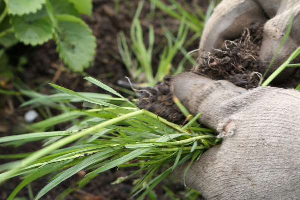
La différence principale par rapport à d'autres sociétés réside dans le fait que nous ne plantons pas des arbres sans savoir s'ils vont survivre ensuite. Nous les "suivons" dans leurs 4 premières années. Photos d'évolution, rapport détaillé et témoins d'autonomie vous sont transmis.
De cette façon, nous observons le degré de réussite de chacun de nos projets, nous continuons d'apprendre et nous assurons de ne pas avoir planté x millions d'arbre mais plutôt d'avoir constitué x millions de mètres carrés d'écosystèmes pérennes. Notre taux de survie à 4 ans est notre meilleure garantie.
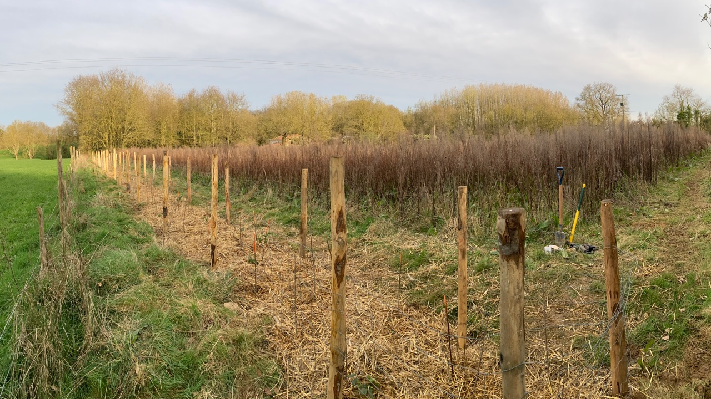
"Lorsque nous avons souhaité nous lancer dans la reforestation d'une partie de notre terrain et après un comparatif des différentes options, nous avons décidé de faire confiance à Vraie Forêt. L’équipe est venue sur place et nous a conseillé sur les essences par rapport au sol, aux contraintes environnementales, aux essences déjà présentes et celles qui étaient manquantes. Leur rapidité d’intervention, leur rigueur, leur expertise et leur exécution nous ont bluffé. Nous referons appel à Vraie Forêt et nous les recommandons vivement !"
Tout dépend.
Il faut prendre en compte différents facteurs comme: la densité souhaitée de plants, le choix des essences, le degré de préparation du sol à effectuer, le relief, l'accessibilité, le passage d'éventuelles machines ou des souhaits particuliers...
N'oubliez pas que sur la surface d'une parcelle donnée, il faut soustraire la surface d'un passage, de la zone témoin et d'éventuels aménagements de gestion de l'eau.
Pour obtenir un devis, c'est rapide mais nous devons nous rendre sur place. Contactez-nous pour un devis.
Nous sommes basés à Nantes mais nous intervenons dans toute la France métropolitaine.
Pour les projets dépassant les 100 hectares, nous pouvons nous déplacer à l'étranger.
Notre planning de plantation débute mi-septembre et se termine mi-avril (et varie selon les régions). Le reste de l'année, nous préparons les chantiers de plantations.
Nous faisons également le suivi en dehors de la période de plantation. En dehors de ces contraintes, nous avons une capacité à prendre de nouvelles commandes tout au long de l'année. Pour les petites parcelles comme pour les grandes.
Pour ce qui est de la durée, en fonction de l'état du sol, de l'accessibilité et si les plants sont disponibles, il faut compter une semaine environ par hectare.
L'équipe fondatrice de Vraie Forêt travaille avec une multitude de partenaires en fonction des chantiers: pépiniéristes, entreprises de travaux agricoles, fournisseurs d'intrants, carrières... tout dépend du projet et de ses besoins. Tous les plants, matériels et outils sont français.
Nous travaillons aussi avec beaucoup de fournisseurs pour éviter de faire parcourir de grandes distances aux matières, plants ou machines. Nous faisons de notre mieux pour que le bilan carbone de nos chantiers soit le plus bas possible.
Oui, c'est préférable et plus rapide.
Cela dit, en fonction de votre budget ou planning, nous pouvons vous aider à faire l'acquisition d'une parcelle.
12/04/2022 - Tutoriel vidéo
Comment planter un arbre ? - Parfois il n'y a qu'un seul arbre à planter mais encore faut-il bien le faire...
25/03/2022 - Vidéo Chantier
Découvrez notre dernier chantier de plantation en vidéo, likez, commentez et abonnez-vous à la chaîne.
26/01/2022 - Le Chêne
Nous vous recommandons le film "Le Chêne" de Laurent Charbonnier et Michel Seydoux qui sort en salle le 23 février 2022.